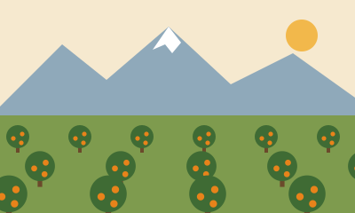

Tribe
هوارة
اسم القبيلة التي استقرت في المنطقة. يصفها الباحثون باتحاد قبلي كبير في سهل سوس غرب تارودانت، وتنتمي إليه فروع منها أولاد تيمة.4
إقليم تارودانتجهة سوس ماسة30°24′N 9°13′W
تعرف أيضًا باسم هوارة وباسم ٤٤. ثلاثة أسماء لمدينة واحدة على الطريق الوطنية رقم 10 بين أكادير وتارودانت، يسكنها نحو 100,284 نسمة بحسب إحصاء 2024.7
يسمّيها الناس بحسب من يتكلم ومن أين جاء. كل اسم يحمل جزءًا من حكايتها.
اسم القبيلة التي استقرت في المنطقة. يصفها الباحثون باتحاد قبلي كبير في سهل سوس غرب تارودانت، وتنتمي إليه فروع منها أولاد تيمة.4
اسم شعبي سببه موقع المدينة عند النقطة الكيلومترية 44 على الطريق الوطنية رقم 10. ويعرف سوقها الأسبوعي بخميس 44.34
ⵡⵍⴰⴷ ⵜⴻⵢⵎⴰ · ⵀⵓⵡⴰⵔⴰ8
الاسم الرسمي. الرواية الأكثر تداولًا تحكي عن قافلة استراحت قرب المنطقة وفيها امرأة اسمها تايمة، ترملت وأرسلت أبناءها إلى الرعي فضلوا الطريق، فخرجت تبحث عنهم.3 وتروي رواية أخرى أن الاسم يعود إلى فرع أولاد تيمة من هوارة، وأن القائد بوشعيب نقل السوق من الإثنين إلى الخميس.1
لا يوجد جواب واحد متفق عليه. الروايات المتداولة في الكتابات المحلية تتوزع على ثلاث.1
ويستشهد بعض القراء بكتاب المعسول للمختار السوسي لتأكيد أنهم من عرب الشبانات من بني معقل.6 ويقول الكتّاب المحليون إن تاريخ هوارة ما زال قليل التوثيق.6
تاريخ القبيلة والمدينة متداخلان. كثير من الوقائع هنا منقول عن كتابات محلية ومقالات صحفية، وقد أشرت إلى مصدر كل واحدة منها.
ينقل الباحثون المحليون عن الإدريسي أن أهل أغمات من هوارة، وهم من البربر المتبربرين بالمجاورة. وهي من الإشارات المبكرة التي يستشهد بها أصحاب هذه الكتابات لاسم القبيلة.3
استعمل المرينيون هوارة في جيوشهم. وبعد انتصار السعديين على المرينيين أبعدوا أغلب أفراد القبيلة من فاس إلى سوس وتركوا بعضهم في المغرب الشرقي. ولّد ذلك عداءً طويلًا مع المخزن، واشتهر محاربو القبيلة بلقب الزواك.1
تذكر مادة هوارة في ويكيبيديا أن القبيلة قضت على ثورة محمد أوعلي بوتكولا في سوس، وأنه قتل في حرب هوارة. وتصف القبيلة بأنها كانت تؤيد المولى عبد الله تأييدًا تامًا.2
ثار المكاوي وسيطر على تارودانت. فخرج إليه الهشتوكيون وجيش الحكومة، وهو هوارة بحسب النص، تحت إمرة المولى سرور، ولقيه الجمع في سهل هشتوكة فأصيب الثائر في رأسه.2
أثناء زيارة السلطان الحسن الأول إلى سوس، عيّن قيادًا من القبيلة. تذكر الكتابة المحلية صالح الهواري على الحفاية، وأحمد بن عليوة الهواري على الكفيفات، وعبد الكريم بومصرف الهواري على أولاد تايمة.4
عيّن بوشعيب بلقرشي الزموري قائدًا على أولاد تايمة سنة 1921، ثم قائدًا على هوارة سوس سنة 1927، وصار تاريخ المنطقة مرتبطًا باسمه. تذكره الذاكرة المحلية حاكمًا قاسيًا أنهى تمرد الزواك. وتختلف الروايات في تسلسل مناصبه، فبعضها يجعل باشوية الدار البيضاء قبل هوارة وبعضها يجعلها في 1954.56
يستعيد كتاب محلي بعنوان «هوارة حبيبتي» ذاكرة جيل السبعينيات، ويصف عائلات كبيرة في وسط قروي، ومدرسة عمومية تجمع التقليد والحداثة.6
ارتفع عدد السكان من 47,126 سنة 1994 إلى 66,183 في 2004، ثم 89,387 في 2014، ثم 100,284 في 2024.7
عبد الصمد قيوح، ابن المدينة، كان وزيرًا للصناعة التقليدية بين 2012 و2013، ثم وزيرًا للنقل واللوجستيك منذ 23 أكتوبر 2024، وأعيد تعيينه في 16 أكتوبر 2026.9
أرقام المندوبية السامية للتخطيط للجماعة الحضرية أولاد تايمة.7
| السنة | السكان | الفرق عن الإحصاء السابق |
|---|---|---|
| 1994 | 47,126 | — |
| 2004 | 66,183 | +19,057 |
| 2014 | 89,387 | +23,204 |
| 2024 | 100,284 | +10,897 |
تذكر ويكيبيديا الإنجليزية رقمًا مختلفًا قليلًا لإحصاء 2024 هو 100,170، بينما يورد CityPopulation الرقم 100,284 المعتمد هنا.78
أشخاص وُلدوا في المدينة، أو ارتبطوا بها، أو حكموها. وضعت على كل بطاقة وسمًا يبيّن مدى قوة الارتباط بالمدينة في المصادر.
وُلد في 11 أبريل 1966 بأولاد تايمة، وتخرج في التجارة الدولية، وترأس شركة لتصدير الحوامض. انتخب نائبًا عن تارودانت الجنوبية سنة 1997، ورأس المجلس الإقليمي لتارودانت من 2003 إلى 2009، وجلس في المجلس الجماعي لأولاد تايمة. تولى الصناعة التقليدية في 2012 و2013، والنقل واللوجستيك منذ 23 أكتوبر 2024، وأعيد تعيينه في 16 أكتوبر 2026. والده الحاج علي قيوح كان نائبًا في البرلمان منذ 1977.9
دبلوماسي وُلد في 1 يناير 1951، سفير في إندونيسيا وسنغافورة وأستراليا ونيوزيلندا بين 1996 و2001، ثم ممثل المغرب في جنيف، ثم في نيويورك منذ أبريل 2014. انتخب نائبًا لرئيس المجلس الاقتصادي والاجتماعي للأمم المتحدة في دورة 2019.10
تذكر ويكيبيديا الإنجليزية أنه وُلد في أولاد تايمة، بينما تذكر سير ذاتية أخرى أنه وُلد في أكادير.
تسجل قاعدة ويكيداتا أنها وُلدت في أولاد تايمة، وأنها تؤدي بالأمازيغية والعربية، في الجاز وموسيقى كناوة، وتصدر أعمالها عن شركة Motéma Music.11
يقدمه موقع كاب برس ابنًا لأولاد تايمة ومنطقة هوارة. تمزج أعماله بين الأصالة والمعاصرة وتعكس عمق الهوية المغربية.12
هو بوشعيب هلال بلقرشي الزموري، من قبيلة أولاد بوشعيب بإقليم الجديدة. عيّن قائدًا على أولاد تايمة سنة 1921 وعلى هوارة سنة 1927. تذكره الذاكرة المحلية بقسوته، وقد أنهى تمرد الزواك في زمن الحماية.56
لم يولد في المدينة. ذكره هنا لأن اسمه يرتبط بتاريخها ارتباطًا وثيقًا، وليس تمجيدًا له.
مولود في أمستردام في 8 ديسمبر 1984، ويعدّه كثيرون من أعظم مقاتلي الكيك بوكسينغ. تذكر ويكيبيديا الإنجليزية أن والديه من قبيلة هوارة هاجرا إلى هولندا قبل ولادته.13
لم يولد في المدينة. وتنسب مصادر أخرى أصل والديه إلى القنيطرة.
تورد ويكيبيديا العربية أسماء أخرى ضمن أعلام المدينة.14 لم أجد لها مصادر تؤكد ارتباطها بأولاد تايمة، فلم أدرجها. إن كان لديك أسماء موثقة تريد إضافتها، أرسلها وأضفها.
تقع المدينة في قلب جهة تتصدر المغرب في تصدير الحوامض والخضر.
تصف وثيقة رسمية للجهة سوس ماسة بأنها أولى الجهات المصدّرة للحوامض والخضر في المغرب، وتنسب إليها نحو 65% من صادرات الحوامض ونحو 85% من صادرات الخضر بحسب المكتب الجهوي للاستثمار الفلاحي. الأرقام من وثيقة تعود إلى موسم 2017-2018.18
تحتضن المدينة سوقًا للجملة معروفًا باسم «سوق جملة»، وهو سوق قروي نموذجي بالمنطقة يتزود منه الناس بالخضر والحوامض والمنتجات الطازجة، لقربه من أحواز تارودانت وأكادير.19
في 9 مايو 2026 دُشّنت بأولاد تايمة وحدة صناعية لشركة GDIRAGRI متخصصة في المستلزمات البلاستيكية الفلاحية، باستثمار إجمالي قدره 124 مليون درهم.20
قصّرت هذا القسم عمدًا حتى لا أضع أرقامًا بلا مصدر. إن كانت لديك أرقام أو أسماء مؤسسات موثقة عن المدينة، أرسلها وأضفها.
سهل سوس يحيط بالمدينة من كل جهة، وقد أخذت منه لقبها المحلي.

يلقبها أهل المنطقة ببرتقالة سوس. تحيط بها حقول وضيعات بمحاصيل متنوعة، وتحزمها غابة يغلب عليها شجر الأركان.18
سوقها الأسبوعي كان يُسمّى سوق الإثنين، ثم صار يعرف بخميس 44 أو خميس أولاد تايمة، وهو اسم يجمع الرقم والمدينة.4
قضى أستاذ فرنسي نحو ست سنوات فيها، وتذكر أشجار البرتقال من صنف نافيل وجبال الأطلس المكللة بالثلج ومباريات الكرة الطائرة قرب وادي سوس. وكتب عنها الألماني راينهارد كيفر أنها صفوف منازل منتظمة على جانبي الشارع الرئيسي.15
أغلب تاريخ هوارة قبل القرن العشرين منقول عن مقالات ومدونات محلية وعن ويكيبيديا، لا عن كتب أكاديمية. اعتبر التواريخ والروايات القديمة قابلة للمراجعة.